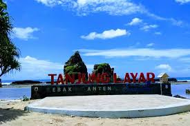

Sejarah
Desa Sawarna adalah bagian dari Kecamatan Bayah Kabupaten Lebak Provinsi Banten. Sejarah Desa Sawarna tidak bisa dipisahkan dari Sejarah Kesultanan Banten , sejarah pembagian Wilayah Banten Kidul dan Pembagian Kabupaten Lebak. Berkenan dengan itu , terdapat beberapa catatan sejarah ,
yang bisa jadi pertimbangan untuk dijadikan Hari Jadi Desa Sawarna . Desa kecil ini memiliki pantai yang sangat indah sehingga cocok dijadikan destinasi wisata.
Sawarna berasal dari bahasa. Sangsakerta yaitu Swharna yang artinya Emas.
Nama Swharna berhubungan dengan Potensi Sumber daya Alam yang sangat Melimpah dan Indah ,
yang ada hubungannya dengan Kerajaan Salakanagara atau kerajaan Pajajaran ada beberapa peninggalan situs yang perlu di teliti.
Sawarna identik dengan sebuah penyakit dari jaman dahulu sampai tahun 70 an , berdasarkan penjelasan Seorang peneliti Belanda yang pernah datang ke Sawarna tahun 1968 bernama Tuan de Boer , dan Singgah di Rumah Kepala Desa Waktu itu . Bahwa Warga Masyarakat dari Hulu sungai Cisawarna sampai ke Muara Sungai hampir semuanya terjangkit penyakit Kulit atau yang disebut panu. Sesuai dengan perkembangan jaman derajat kesehatan masyarakat yang berada sepanjang aliran sungai meningkat maka penyakit kulit tersebut berangsur hilang.
Geografis
Desa Sawarna merupakan kawasan pesisir pantai. Pantai berpasir putih yang silih berganti dengan jajaran karang-karang terjal membuat pesisir Desa Sawarna sarat akan keindahan.
Terbentang dari Pantai Pulo Manuk di sisi barat hingga ke Pantai Karang Taraje di sisi timur, sajian bentang alamnya menawarkan aneka pemandangan yang mengagumkan. Berhadapan langsung dengan Samudra Hindia,
ombak di Sawarna banyak mengundang para peselancar untuk berselancar di pucuk-pucuk ombak yang bergulung saling berkejaran menuju pantai.
Wisata
Sejak Pada tahun 2015 Sawarna menjadi tempat destinasi wisata bagi masyarakat Jawa Barat, Jakarta, Banten, Karawang, Bekasi.
Berikut ini adalah beberapa tempat destinasi yang cocok di kunjungi saat liburan ke pantai sawarna.
Tanjung Layar

Pantai Tanjung Layar adalah daya tarik utama di kawasan Desa Wisata Sawarna ini.
Nama pantai ini didapatkan dari gambaran dua buah batu karang raksasa yang berbentuk seperti layar kapal yang terkembang.
Keunikan bentuk karang ini yang dipadukan dengan cahaya matahari pada saat terbenam membuat Pantai Tanjung Layar kerap menjadi objek fotografi yang menarik.
Pantai Legon Pari
Pantai Legon Pari adalah pantai yang sangat menarik dikarenakan posisi pantai ini berada di teluk.
Pasir di pantai ini memiliki karakteristik yang lembut dan halus. Kondisi pasir yang lembut membuat pengunjung ingin segera melepaskan alas kaki dan berlarian di area pantai.
Kondisi ombak yang jauh lebih tenang di bandingkan pantai pasir putih membuat pantai ini menjadi tempat favorit untuk berenang bersama keluarga.
Pantai Pasir Putih Ciantir
Pantai Pasir Putih adalah Pantai utama yang berada di Desa Sawarna. Pantai dengan hamparan pasir bewarna putih serta hembusan angin yang membuat kita betah berlama-lama di pantai satu ini.
Ombak yang cukup besar membuat desiran ombaknya menjadi alunan musik yang sangat khas di kawasan pantai. Untuk benar-benar menikmati pantai ini diperlukan waktu 3-4 jam.
Pantai Karang Bokor
Karang Bokor meruapakan salah satu tempat wisata yang ada di Sawarna yang lokasinya tersembunyi tapi memiliki keindahan yang sangat luar biasa,
namun yang disayangkan tempat wisata yang satu ini masih belum dibuka untuk umum, karena jalan menuju lokasi wisata Karang Bokor masih terjal dan tingkat keamanan dan kenyamannya masih mengkhawatirkan.
Tapi untuk kedepannya Karang Bokor akan dibuka untuk umum setelah tempat tersebut dinyatakan untuk di kunjungi para wisatawan.
Pantai Goa Langir
Pantai Gua Langir di Desa Sawarna, Kecamatan Bayah, Kabupaten Lebak, Banten, memadukan wisata pantai dan gua sebagai andalan.
Pantainya luas dengan hamparan pasir putih yang membentang. Sedangkan gua di belakang pantai menyajikan pemandangan isi bumi yang penuh dengan keindahan formasi batuan stalagtit dan stalagmit.
Formasi batuan tersebut merupakan bentukan dari tetesan air ribuan tahun yang lalu. Keunikan dari formasi bebatuan ini melengkapi perjalanan anda di kawasan wisata Desa Sawarna.